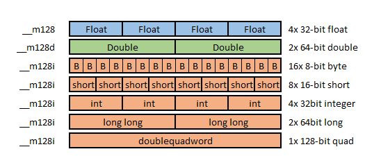
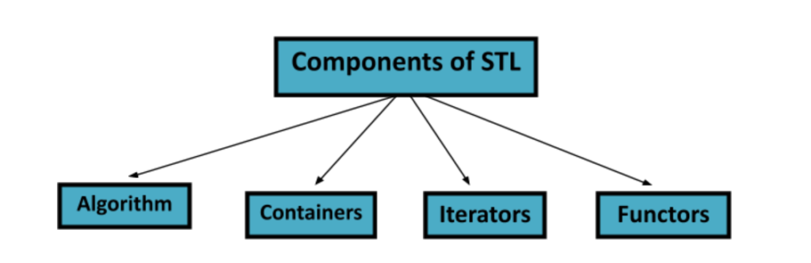
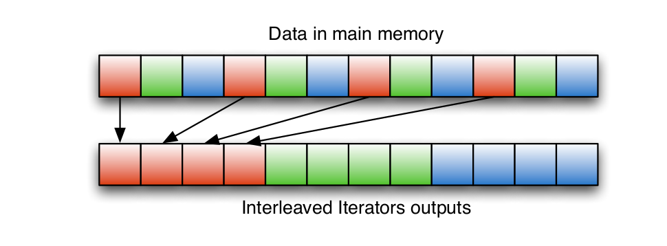

Boost.SIMD
Generic Programming for portable SIMDization
Created by Yiheng CAO
Pour quoi il veut faire cet extension et implémentation de C++ ?
1. Plusieur types de SIMD maintenant

+ Problème: Reécrire tous les codes SIMD + Solutions: Automate et Multiplateforme
2. Quelques outils actuels
---- + Autovectorisation de compilation + Directive de code (#pragma) + Libraires de SIDM spécifique + Intel:MKL et AMD:ACML ----
Ils ne sont pas assez efficace pour Multiplateforme ou SIMD
C'est Parti!
Extension-1
----- + Abstraction de SIMD dans C++
----- + Concepter une strcuture de données pour présenter + Mémoire et les valeurs, adapdation au tuple et range + Compléter les interface de C++ (math, opérateur etc)
Code de base
Extension-2
---- + Intégration dans STL de C++
---- + Pour la base de STL, il faut réaliser **Container** et **Iterator** afin d'interfacer les **algorithmes** de STL + Faciliter les programmations et implémentations
### Plus concrètement ------ + Pour le **Container** + L'adaptateur de mémoire (données alignées) + Pour le **Iterator** + Le Sliding Window Iterator (Filtrage algorithme) + Le Interleaved Iterator (Données hétérogènes)
Code d'exemple de STL
Implémentation-1
---- + Sur la base de AST-Tree et EDSL + Utiliser le libraire Boost :: Proto ----
### C'est quoi le Proto
+ Un framework pour concevoir EDSL en C++ + It contients plusieurs outils pour concevoir => + type-checking, transformer et exécuter expression de templates
+ C'est un EDSL très simple pour réaliser une fonction
---- + On peut les interprèter en utilisant **Boost :: Proto**
Implémentation-2
---- + Sur la base de Générique Overloading + SFINAE(Substitution failure is not an error) + Tag Dispatching(Utiliser l'Hiérarchie Class) ----
Il propose Tag Dispatching (SSE, SSE2, AVX, NEON, NEON2 et Altivec etc)
Compilation en Tag
BenchMarks
---- + AXPY Kernel Calcule + Sigma Delta Motion Détection + RGB2YUV Couleur Transformation ---- Evaluer les performance en **GFlop/s** ou CPP
Les comparaision
---- + AXPY Kernel Calcule + GFlops: Boost::SIMD = gcc < icc + Grain fin + déroulage + Spécifique + Sigma Delta Motion Détection + CPP: Vitesse x 8 + Un calcule plus général + RGB2YUV Couleur Détection + CPP: > Vitesse x 4
Conclusion
---- + Bon: + Simplifier la programmation SIMD + Accélérer les applications générales + Support de DSL domaine spécifique ---- + Manque: + Support de Grain fin (déroulage) + Types de données (Complexe) + Amélioration d'architecture spécifique